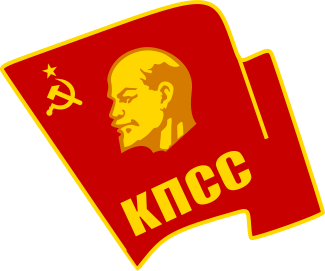

 苏联共产党中央委员会
关于苏联共产党中央委员会是如何产生的，请参见苏联共产党代表大会。
苏联共产党中央委员会（俄语：Центральный комитет Коммунистической партии Советского Союза, ЦК КПСС），简称苏共中央（俄语：ЦК），是苏联共产党的中央权力组织。早期也称为“全联盟共产党（布尔什维克）中央委员会”根据党章，在两次苏联共产党代表大会之间的闭会期间，由中央委员会管理全党及政府事务。中央委员会成员每五年由党代会选举产生。其总部位于莫斯科旧广场4号。
--Wikipedia
苏共中央政治局由苏共中央选出并对其报告。苏共中央同时选举出苏共中央书记，并组成苏共中央书记处，同时也选举出苏联共产党中央委员会总书记。在1919-1952年间，苏联共产党中央组织局也以同样的方法选举产生。
苏共中央一年召开大会两次，每次集会时间持续一至两天。在其存在的大部分时间，苏共中央的权力由于它并不经常召开的大会和庞大的委员数量所限制，实权掌握在政治局内。中央委员会的定位更像是一个“橡皮图章”，用来造成一个达成共识的效果以赋予政治局决议的合法性。在诸如制定新的长期计划，或是选举新的党总书记等大型活动召开前，会召开一次全体特别会议。
自1917至1934年间，中央委员会由于讨论政治问题，更像是一个议会。但是由于中央内部许多委员对斯大林的反对声音时有产生，最终导致斯大林在苏共十七大与十八大之间（1934至1939年）发动了大清洗运动。因此直至斯大林死前，苏共中央的地位基本被无视。
斯大林死后，苏联进入了一段时期的集体领导制，并因此重启了中央委员会使其发挥作用。1957年，中央委员会反对了主席团（即政治局）提出的罢免赫鲁晓夫的决议。赫鲁晓夫在朱可夫元帅的协助下，得到了中央委员会的支持，并将对手指为反党集团。七年后的1964年，苏共中央在勃列日涅夫的授意下通过了罢免赫鲁晓夫的决议。
1985年3月的选举，改革派的戈尔巴乔夫当选为新的苏共中央总书记。这是苏共中央一次具有里程碑意义的决定。在1991年八·一九事件后，中央委员会在戈尔巴乔夫辞去苏共中央总书记一职后解散。
在 Wikipedia查看更多。
苏联共产党中央委员会总书记（俄语：Генеральный секретарь ЦК КПСС）是苏联共产党领袖的头衔。在俄国历史上，这个职位往往是苏联最高领导人的代名词。除总书记外，其先后有过4个不同的名称，1917-1918年称为专职书记，1918-1919年称为书记处书记，1919-1922年称为责任书记，1953-1966年称第一书记。斯大林将这一职位从共产党的领袖提升为苏联名义上和实际上的最高领导人。
--Wikipedia
自1922年苏共中央总书记一职成为苏联最高领导人的象征后，除赫鲁晓夫（1964年因政变下台）和戈尔巴乔夫（1991年苏联解体）以外其余苏共中央总书记皆终身担任该职务。作为苏联唯一的执政党，苏联共产党的最高领导人，苏共中央总书记的职务拥有极大的权力，末任总书记戈尔巴乔夫在其回忆录的结语写道：“我担任苏共总书记一职时，我拥有的权力可以和专制帝王相媲美。
--百度百科
苏联共产党代表大会（俄语：съезд КПСС），简称苏共党代会，是由苏联共产党及其前身（包括俄国社会民主工党（布尔什维克）、俄国共产党（布尔什维克）和全联盟共产党（布尔什维克））组织的代表大会。
--Wikipedia
根据苏联共产党的党章规定，苏联共产党代表大会是苏共的最高权力机关。两次苏联共产党代表大会之间的闭会期间，由苏联共产党中央委员会管理全党及政府事务。在建党早期代表大会不定期举行。约瑟夫·斯大林死后，代表大会确定每五年举行一次。苏共中央也在苏共党代会上选举产生。
Communist Party of the Soviet Union
联系我: CandyDada@vip.qq.com or GitHub.
安息吧  苏联 1922-1991.
苏联 1922-1991.
 English Pages
English Pages
萌ICP备20221191号